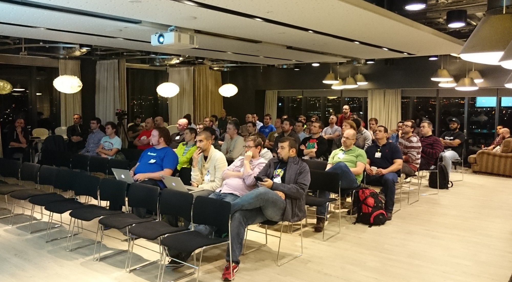
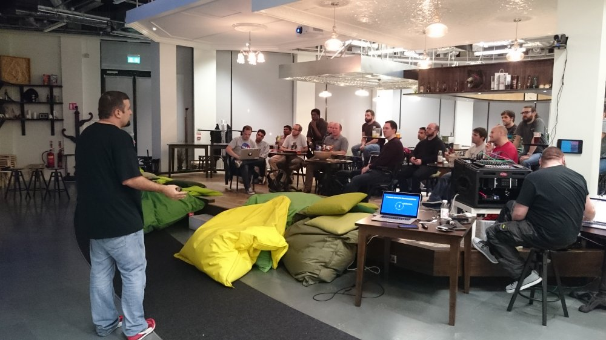

iNOG::4
Open DDOS, CWN(Community Wireless Networks), and Jupiter Rising!
2.5 hours and 53 netengs @ a festive Google HQ in Dublin!
Video recordings coming shortly! Presenting we had:
- Vicente from Zendesk (DDOS) On open source recipe for DDOS mitigation. - SLIDES
- Oliver Herms (Google) Freifunk - Introduction to free and open wireless community networks - SLIDES
- Phil Sykes (Google) Jupiter rising: A decade of Clos topologies and centralized control in Google’s datacenter networks - SLIDES
Much gratitude to Googlers: Shane, Darren, and Costi for hosting us in such an lovely space with awesome Dublin views (not forgetting the pizza and drinks on Level1 too!)

iNOG::3
Sharks and Pythons on-board the USS Complexity!
Two hours and 24 netengs in attendance! Woohoo, we're growing and we love it!
The whole thing was recorded and can be found on Youtube here. (Many thanks to Jamie for the awesome setup!). Presenting we had:
- Jose from Facebook (Dr. NMS or: How Facebook learned to stop worrying and love the network) - SLIDES
- Darren from Google (Starting to code as a NetEng and side projects) - SLIDES
- Cristian from Redbit Networks (Sink or Swim - Cisco IWAN) - SLIDES
Massive thanks to Airbnb and Donal for hosting us, in a fantastic location and with as many drinks, snacks and pizza as we could possibly want!

iNOG::2
12!
What a great evening! We were hosted by the wonderful Intercom (thanks Brian, Niamh, and Bob) and had double the numbers of iNOG::1 with 12 people attending.
Introductions, a spot of admin and two great lightning talks: first one about Open Network Design presented by Donal and the second was an excellent technical and historical journey around the Internet in Ireland with Barry O'Donovan from INEX i.e. the Irish Internet EXchange (IX).
We had amateurs and professionals alike in attendance and afterwards we went for a quick drink in O'Donoghues nearby. We'd love to see you at iNOG::3 on Oct 6th 7pm at Airbnb :)